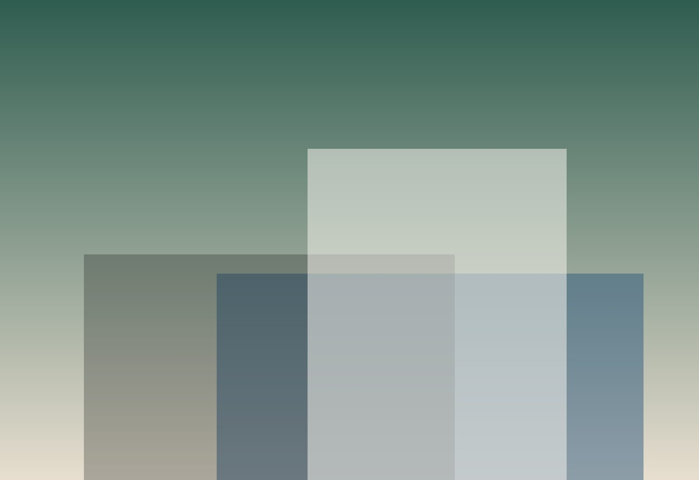
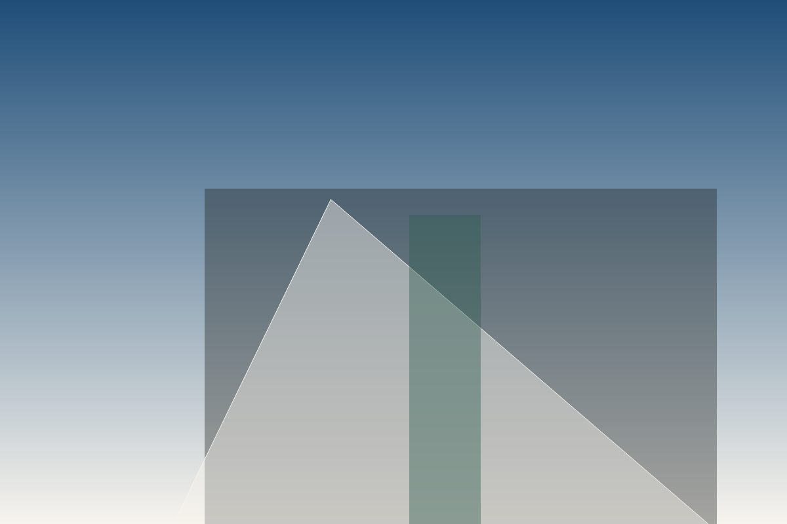
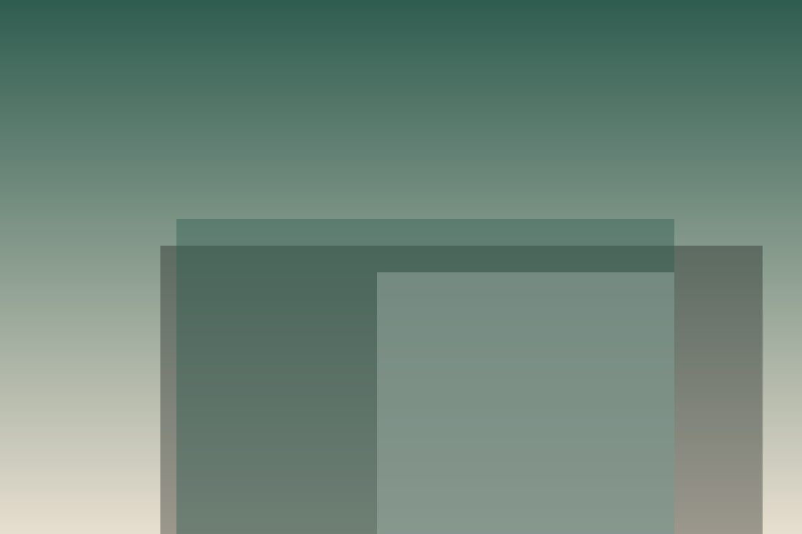
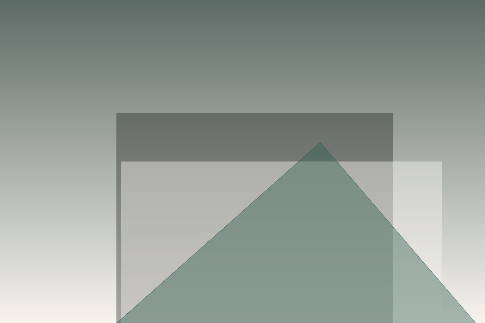

Residential
New homes and extensions designed around daylight, storage and the rhythms of a household.
Explore residentialArchitecture & interiors
We design calm, durable buildings for families, workplaces and communities — shaped by light, landscape and the way people actually live.

New homes and extensions designed around daylight, storage and the rhythms of a household.
Explore residentialStudios and offices that support focus and conversation, built with healthy materials.
Explore workplaceCareful repair and adaptation of older buildings, keeping their character and cutting their energy use.
Explore restoration
A family home stepping down to the water.

Twelve maker studios in a restored mill.

A reading room open to the tides.
“They listened to how we live before drawing a single line. The house feels like it has always been here.”
Maren & Jo, Cedar Point House
How orientation and eaves do more than any gadget.
What a century-long view changes about material choices.
Notes from two years on site.
Tell us about the place and the people. We reply within two working days.
Start a conversation